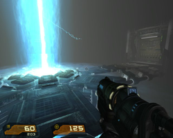
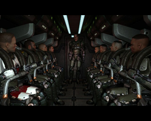

Quake4
Dieser Artikel wurde für die folgenden Ubuntu-Versionen getestet:
Ubuntu 14.04 Trusty Tahr
Zum Verständnis dieses Artikels sind folgende Seiten hilfreich:
Quake 4 erschien im 4. Quartal 2005 und ist eine Fortsetzung des zweiten Teils der Quake-Serie. Besonderes Augenmerk wurde daher auf den Singleplayer-Modus gelegt, welcher nahtlos an Quake 2 anknüpft. Der Entwickler hat den Multiplayerpart von Quake 3 übernommen und um einige sinnvolle Details ergänzt. Die amerikanische Version des Spiels wurde wie seine Vorgänger indiziert, die geschnittene deutsche Version ist im Handel ab 16 Jahren erhältlich, die Story wird durch die Kürzungen unverständlich. Zusätzlich ist die deutsche Version im Mehrspielermodus inkompatibel zur anderen Version, d.h. ein Verbinden auf die meisten Server funktioniert nicht.
Dieser Wiki-Eintrag soll die Installation von dem Spiel erklären, Empfehlungen zu Maps und Mods geben, sowie einige Fehler und ihre Lösungen, die im Forum erörtert worden sind, enthalten.
|  |  |
| Spielszene | Spielszene |
Vorbereitung¶
Damit Quake4 auf einem 64bit System lauffähig wird, sind vorab zwei 32bit Bibliotheken zu installieren.
libsdl1.2debian:i386 (universe)
libasound2-plugins:i386 (Soundausgabe)
 mit apturl
mit apturl
Paketliste zum Kopieren:
sudo apt-get install libsdl1.2debian:i386 libasound2-plugins:i386
sudo aptitude install libsdl1.2debian:i386 libasound2-plugins:i386
Installation¶
Hinweis:
Um Quake4 überhaupt spielen zu können ist es in vielen Fällen erforderlich, dass der originäre (sogenannte "closed source"-Treiber) des Grafikkartenherstellers aktiviert wird, da es sonst beim Starten zu einen Abbruch mit folgendem Fehler kommen kann:
X..GL_EXT_texture_compression_s3tc not found Fatal Error: Texture compression unavailable
Durch Eingabe von
glxinfo | grep s3tc
in einem Terminal kann vorab geprüft werden ob die GL_EXT_texture_compression_s3tc bereits aktiviert ist (wird diese nach Eingabe des Befehls angezeigt, muss nichts weiter unternommen werden!).
Hilfe beim Aktivieren des kompatiblen Treibers findet man im Wiki unter restricted-manager.
Um Quake 4 zu installieren, lädt man sich das aktuelle quake4-linux-1.4.2.x86.run  herunter. Da der ftp-Server von id oftmals überlastet ist kann die Datei auch alternativ über dieses Spiegelserver heruntergeladen werden: http://www.quakeunity.com/file=2485
herunter. Da der ftp-Server von id oftmals überlastet ist kann die Datei auch alternativ über dieses Spiegelserver heruntergeladen werden: http://www.quakeunity.com/file=2485
Bei der heruntergeladenen Datei handelt es sich um einen sogenannten Loki Installer [5]. Nun sollte ein Terminal geöffnet werden, da die Installation in die Standardverzeichnisse root-Schreibberechtigungen verlangt. Nun wechselt man in den Ordner, in dem die Datei gespeichert wurde, und macht die Datei ausführbar:
chmod u+x quake4-linux-xxx.x86.run
Danach folgenden Befehl zum Installieren der Software:
sudo ./quake4-linux-xxx.x86.run
Die nun folgende "Software Licence Agreement" kann gelesen, oder aber mit dem Buchstaben "q" übersprungen werden. Jetzt können alle Fragen mit "Y" bestätigt werden (die Readme muss nicht gelesen werden, hier darf man beruhigt "N" drücken!). Die vorgeschlagenen Verzeichnisse der Spieldateien sollten übernommen werden. Die Installation kann die ganze Zeit durch "STRG+C" abgebrochen werden!
Nach der Installation sollten noch die Spieldateien und -verzeichnisse den "richtigen" Besitzer erlangen, da diese zur Zeit nur für root lesbar sind!
sudo chown -R BENUTZERNAME /usr/local/games/quake4/
Bei einer Root-Installation sollte man das Spiel anschließend nicht aus dem Installer heraus starten, da sonst im Homeverzeichnis der Ordner ~/.quake4 mit falschen Berechtigungen erstellt wird. Außerdem müssen vor dem Start des Spiels erst die auf der Quake 4-DVD im Ordner Setup/Data/q4base befindlichen *.pk4-Dateien ins Quake 4-Verzeichnis in den Ordner q4base ( /usr/local/games/quake4/q4base/ ) kopiert werden, vorhandene Dateien dabei nicht überschreiben.
Hinweis:
Wer die Deutsche DVD von Quake4 besitzt, sollte bei der Installation des Point Release definitiv "German" für die Installation auswählen, ansonsten bricht das Spiel im Single-Player-Modus am Ende des Level 12 "Nexus Hub" bzw. beim Laden des Level 13 ab, da hier eine in Deutschland zensierte Szene zwischen den Leveln 12 und 13 gezeigt werden soll, die in den pk4-Dateien nicht vorhanden ist. Wer sich trotz der Deutschen DVD diese Szene nicht entgehen lassen möchte, sollte in einschlägigen Videoportalen nach "Stroggification" suchen.
Wem das trotzdem passiert ist, dem sei noch gesagt, dass eine Sicherung der Savegames und eine Neuinstallation nichts bringt, da die Savegames anschließend nicht mehr geladen werden können. Hier hilft nur ein neues Spiel anzufangen und sich noch mal durchzubeißen oder mit Cheat-Codes bis zum letzten Spielstand "durchzumogeln".
Wenn das Spiel als Root installiert oder eine Verknüpfung in dem Ordner ~bin erstellt wurde, kann es mit dem Befehl
quake4
gestartet werden [4], ansonsten über die Datei quake4 im Verzeichnis des Spiels.
Mods und andere Erweiterungen¶
Installation und Start¶
Wie schon beim Vorgänger bastelt die Community fleißig an Maps und Mods. Die einzelnen Mods müssen entweder ins Quake 4-Hauptverzeichnis (Standard: /usr/local/games/quake4) oder im Homeverzeichnis in den Ordner .quake4 entpackt werden [2]. Über den Menüpunkt "Mods" im Spiel kann dann der entsprechende Mod aufgerufen werden oder mit dem Befehl
quake 4 set fs_game <Ordnername>
direkt gestartet werden [4]. Dabei muss darauf geachtet werden, dass das Archiv, in dem sich der Mod befindet, einen neuen Ordner erstellt. Wenn dies nicht der Fall ist, erstellt man vorher einen und entpackt den Mod in diesen [2]. Um andere Erweiterungen wie Maps, Modelle etc. zu installieren, müssen sie im Quake 4-Verzeichnis in den Ordner q4base oder nach .quake4/q4base entpackt werden [2].
Problembehebung¶
Soundprobleme¶
Beim Spielen kann der Sound ab und zu mal stocken. Die Lösung ist es, das Spiel per
quake4 +set s_driver oss +set NumberOfSpeakers 2-Box
zu starten [4]. Dabei muss die Anzahl der Lautsprecher evtl. angepasst werden, hier sind es zwei.
Spanische statt englische Menüs¶
Bei Verwendung der internationalen Version von Quake 4 (also nicht der deutschen Version) werden Sprachdateien für mehrere Sprachen installiert. Es kann vorkommen, dass nach der Installation Spanisch statt Englisch als Standardsprache eingestellt ist. Ist dies der Fall, so muss man die im Homeverzeichnis befindliche Konfigurationsdatei ~/.quake4/q4base/Quake4Config.cfg mit einem Editor [3] öffnen und die Zeile
seta sys_lang "spanish"
in
seta sys_lang "english"
abändern. Danach startet Quake 4 mit englischer Menüführung.
Spielinterne Konsole (englische Version)¶
Bei der englischen Quake 4-Version lässt sich bei deutschen Tastaturen die spielinterne Konsole nicht öffnen. Um dieses Problem zu lösen, erstellt man mit einem Editor [3] die Datei q4start mit folgendem Inhalt:
#!/bin/bash xmodmap -e "keycode 49 = 0x60" quake4 $* xmodmap -e "keycode 49 = 0x5e"
Anschließend muss die Datei noch ausführbar gemacht werden [6]. Im Terminal macht man dies mit folgendem Befehl [1]:
chmod +x q4start
Anschließend sollte die Datei bei einer Root-Installation nach /usr/local/bin bzw. bei einer Benutzer-Installation in den Ordner ~bin verschoben werden. Wenn das Spiel nun mit dem Befehl
q4start
gestartet wird [4], kann man im Spiel die Konsole mit Strg + Alt + ^ öffnen.
Hinweis:
Wenn man in der Datei .quake4/q4base/Quake4Config.cfg im Homeverzeichnis den Eintrag seta com_allowConsole auf 1 setzt, reicht ein Druck auf
^ um die Konsole zu öffnen.
Niedrige Texturauflösung¶
Es kann (zumindest bei ATI-Grafikkarten) passieren, dass die Größe des Video-RAMs vom Spiel nicht korrekt erkannt wird, was dazu führt, dass die Texturen selbst bei hohen Details eine sehr niedrige Auflösung haben. Um dem entgegen zu wirken, muss man einige Einstellungen in ~/.quake4/q4base/Quake4Config.cfg anpassen:
seta sys_videoRAM "korrekte Menge Video-RAM eintragen"
seta com_videoRAM "korrekte Menge Video-RAM eintragen"
seta image_downSizeLimit "1024"
seta image_downSizeBumpLimit "1024"
seta image_downSizeSpecularLimit "1024"
Wobei die letzten drei Werte für Grafikkarten mit einem Video-RAM von mindestens 512 MB empfohlen werden, für Grafikkarten mit weniger Speicher sind entsprechend niedrigere Werte zu wählen. Eine detaillierte Auflistung von möglichen Tweaks über die ~/.quake4/q4base/Quake4Config.cfg (unter anderem auch eine Erläuterung zu den oben genannten Einstellungen) findet sich hier.

- Erstellt mit Inyoka
-
 2004 – 2017 ubuntuusers.de • Einige Rechte vorbehalten
2004 – 2017 ubuntuusers.de • Einige Rechte vorbehalten
Lizenz • Kontakt • Datenschutz • Impressum • Serverstatus -
Serverhousing gespendet von